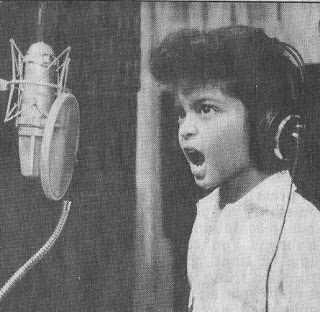

Peter Gene Hernández (nacido el 8 de octubre de 1985), más conocido por su nombre artístico Bruno Mars, es un cantante-compositor y productor musical estadounidense de ascendencia filipina por la vía materna y puertorriqueña por la vía paterna. Criado en Honolulu, Hawái por una familia de músicos, Mars empezó a hacer música a una edad temprana (a los 2 años). Tras actuar en diversos espectáculos musicales en su ciudad natal durante toda su niñez, decidió seguir una carrera musical y se trasladó a Los Ángeles después de graduarse de la escuela secundaria. Mars comenzó a producir canciones para otros artistas, al unirse al equipo de producción The Smeezingtons.
Su música se caracteriza por mostrar una amplia variedad de estilos e influencias y contiene elementos de géneros musicales variados. Ha trabajado con una variedad de artistas de diferentes géneros; Mars reconoce las influencias que sus colaboraciones han tenido en su propia música. Cuando era niño fue muy influenciado por artistas como Elvis Presley y Michael Jackson y con frecuencia se hacía pasar por estos artistas desde una edad temprana. Mars también incorpora sonidos inspirados en el reggae y en la Motown en su trabajo. Jon Caramanica de The New York Times se refiere a Mars como «uno de los cantantes más versátiles y accesibles en el pop».1 En varias ocasiones, su voz ha sido comparada con la de Michael Jackson.2 Mars también forma parte del trío de compositores bautizados como The Smeezingtons, formado junto a Philip Lawrence y Ari Levine, que ha escrito letras para una decena de artistas como Sugababes, Adele, Justin Bieber, Flo Rida, Cee Lo Green y el artista representativo del K-POP Taemin, de uno de los grupos más influyentes de este género SHINee.

Bruno Mars desde que era un niño tuvo sierta inclinación hacia la música. Empezó imitando a Elvis Presley. También le gustaban mucho los intrumentos en especial la guitarra y el piano.
Bruno era la pequeña estrella de un grupo familiar que actuaba en el Hilton de Waikiki. El padre podía ser un gran percusionista, la madre una gran cantante y bailarina de hula-hula, pero el chaval robaba los focos imitando a la perfección al Rey del Rock. Pueden buscar vídeos de discutible calidad en Youtube o, por qué no, alquilar la comedia romántica 'Luna de miel para tres', con Sarah Jessica Parker, James Caan, Nicolas Cage y… el pequeño Bruno/Peter sacudiendo caderas.
Cuando sus padres se divorciaron, el rock se acabó y empezó el adagio para cuerdas. Bruno tenía 11 o 12 años. Sus hermanas pequeñas se quedaron con la madre; él, con el padre. No lo pasó en grande: «Se divorciaron, vendieron la casa, mi padre perdió todos sus negocios», contaba en una reciente entrevista de portada de 'Rolling Stone'. «Y básicamente pasamos de vivir en un buen vecindario a no tener casa. Estábamos durmiendo en una limusina, pero mi padre, con su pasión, iba por ahí y trataba de conseguir conciertos en hoteles, y salimos adelante».
La noticia se ha convertido en viral, pero afortunadamente no es cierta. Sin embargo, a diferencia de otros engaños anteriores que anunciaban la muerte de famosos, esta vez, los bromistas han llevado el fraude a otro nivel. Crearon una página de Facebook que ya reunió más de 1 millón “Likes”.
En plena nota con la revista Billboard, Charly García aseguró que el cantante estadounidense usó melodías de su canción Fanky para su mega exitazo Uptown Funk.
En 2010, fue arrestado en Las Vegas por posesión de cocaína. Mars declaró que era la primera vez que tomaba drogas y se declaró culpable en el juicio. Fue condenado a pagar una multa, realizar servicios a la comunidad y acudir a un curso de prevención.
¿Un pequeño desliz en la modélica carrera de la estrella? Tal vez no. Años después, Mars reconoció en la revista 'GQ' que lo de que fuese su primera vez igual no era tan cierto. "Estaba muy colocado. Muy borracho", aseguró. El cantante había pasado de la nada al éxito absoluto y le cogió gusto a las fiestas, la noche y todo lo que conlleva. Pero aprendió la lección. Se dio cuenta de que puedes estar años intentándolo, acumulando premios y fastidiarla en cuestión de un segundo. Ay, Bruno, qué complicada es la fama.
Desde que tengo conocimiento me encanta la música. Por lo general no me importaba el género, sino la letra y el ritmo. Como mi lengua nativa es el español, obviamente es la lengua que entiendo y de la que empecé a escuchar música. Pues cuando entre al Instituto Politécnico Loyola los chicos de mi alrededor solo escuchaban canciones en el idioma inglés, lo que me paresció muy interesante practicar, además tenían unos ritmos muy contagiosos que me gustaron y era una vía divertida de aprender un poco de inglés.
Pues empecé a escuchar canciones de cantantes como Adele, Justin Bieber, Pentatonix, entre otros. Pero entre todos estos el que mas me gustó fue Bruno Mars.
Lo que busco en una canción es sentirme feliz y que la música por sí sola me haga cantar. Pues las canciones de Bruno Mars las traducia y me las aprendía, o mejor dicho las tradusco y me las aprendo. Aunque debo admitir que no solo me gustan las canciones, sino también la voz y el bailar de Bruno Mars.
Por lo general el ritmo de sus canciones es muy contagioso y baible aunque también varias veces suele ser romántico. Tanto sus canciones, como su voz en particulas lo han llevado a ser favorito de muchos y a ganar diversos premios como Grammys, Bill Boards, entre otros.
La música de Mars es notable por mostrar una gran variedad de estilos e influencias, como pop, rock, reggae, R&B, soul y hip hop. Jon Caramanica de The New York Times lo llamó "uno de los cantantes más versátiles y accesibles del pop, con una voz suave e influenciada por el soul, que se adapta a una amplia gama de estilos". Mars fue influenciado inicialmente por artistas de R&B como Keith Sweat, Jodeci y R. Kelly, así como por el rock 'n roll de los años 1950 y Motown. En el instituto empezó a escuchar grupos de rock clásico como The Police y Led Zeppelin. Mars explicó que "no es fácil crear canciones con esa mezcla de rock, soul y hip hop, y solo hay un puñado de ellas".
Además, Mars afirma que su trabajo con otros artistas influenció su estilo musical, diciendo que "Nothin' on You" tuvo un ambiente Motown, "Billionaire" se acercó más al reggae, aunque una de mis favoritas es la canción de Cee-Lo Green (Fuck You!). No creo que otra persona pudiese haber cantado esa canción". Cita el doo-wop como una gran influencia en su música, refiriéndose al género como "simplemente canciones de amor sencillas - tan encantador, sencillo y romántico".
Líricamente, muchas canciones de Mars han sido descritas como despreocupadas y optimistas; sin embargo, algunas canciones tratan temas más oscuros, como Grenade, Liquor Store Blues o Talking to the Moon, que cuentan relaciones fracasadas y comportamientos auto-destructivos.